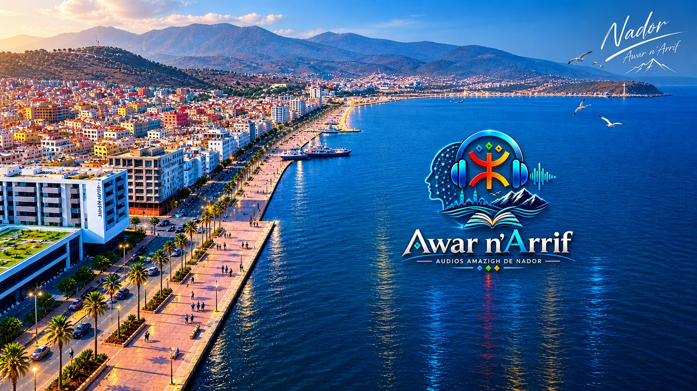

Awar n’Arrif
Ensemble, donnons une voix numérique au Tarifit de Nador.
Participez à la constitution d’un corpus vocal en Tamazight (Tarifit) de la ville de Nador, dans le cadre d’une thèse de doctorat à la Faculté des sciences appliquées de Nador – Université Mohammed Premier.
Comment participer ?
Enregistrement d’un paquet
Paquet n° 4Tanemmirt ! Merci pour votre contribution.
Vos 10 enregistrements ont bien été sauvegardés.
Votre participation contribue à la constitution d’un corpus vocal pour la reconnaissance automatique de la parole.
À propos d’Awar n’Arrif
Awar n'Arrif est une initiative de collecte de voix en amazigh rifain (Tarifit) de Nador. Elle vise à constituer une base de données vocales destinée à soutenir et à enrichir la recherche scientifique sur la langue amazighe rifaine.
La participation est volontaire. Vous pouvez contribuer à votre rythme et revenir plus tard pour poursuivre votre participation.
Ce projet s'inscrit dans une thèse de doctorat à la Faculté des sciences appliquées de Nador – Université Mohammed Premier.
Thèse et recherche
Ce projet vise à constituer un corpus vocal en Tarifit de Nador pour soutenir la recherche sur la reconnaissance automatique de la parole.
Chaque contribution comprend un paquet de 10 phrases courtes, prononcées naturellement. Les enregistrements sont destinés à un usage de recherche universitaire.
Confidentialité
La participation est volontaire. Aucun compte nominatif n'est nécessaire pour contribuer. La voix enregistrée peut néanmoins constituer une donnée personnelle identifiable : l'absence de nom ne garantit pas l'anonymat.
Les fichiers vocaux et les informations associées aux phrases sont stockés sur le serveur du projet pour la constitution d'un corpus de recherche. Les données ne sont pas publiées automatiquement par ce site.
Pour toute question relative à l'utilisation de vos enregistrements, à leur conservation ou à une demande de retrait, contactez berchane2026@gmail.com. Sans identifiant de contribution, retrouver précisément un enregistrement pour le supprimer peut nécessiter des informations complémentaires.
Avant une collecte publique, le responsable du projet doit compléter les informations obligatoires : identité du responsable de traitement, durée de conservation, base juridique, destinataires, droits applicables et modalités d'exercice de ces droits.
Administration
Accès réservé à l’administrateur d’Awar n’Arrif.
Administration
Gestion de la collecte vocale – Projet de recherche Awar n’Arrif
Contributions par paquet
Dernières contributions
| ID | Paquet | Date et heure | Audios |
|---|